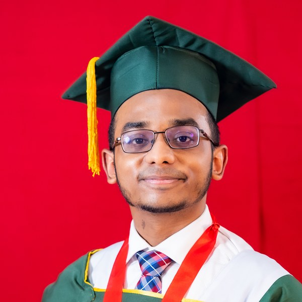

Skull Speed-of-Sound Mapping
Co-registered microCT volumes with ex-vivo skull ultrasound in degassed water; estimated spatial speed-of-sound maps, attenuation, dispersion, and group velocity from RF data, validated against microCT structure. Ongoing

MRKPhD Student, Biomedical Engineering
Virginia Polytechnic Institute and State University, Blacksburg
ICTAS Doctoral Scholar · Graduate Research Assistant, Dr. Aiguo Han's Lab
I am a PhD student in the Department of Biomedical Engineering at Virginia Tech and an ICTAS Doctoral Scholar, working as a Graduate Research Assistant in the lab of Dr. Aiguo Han. My research focuses on diagnostic ultrasound imaging, with a primary emphasis on ultrasound brain imaging — including speed-of-sound characterization, aberration correction, and wave propagation through the skull.
My background spans medical imaging, acoustic signal processing, physics-based simulation, and machine learning. Before my PhD, I completed a B.Sc. in Electrical & Electronic Engineering at the Islamic University of Technology (Bangladesh), graduating first in my class, and served as a faculty lecturer there.
Current work centers on quantitative and transcranial ultrasound: estimating speed-of-sound and attenuation in skull bone from co-registered microCT and ultrasound, modeling phase and amplitude aberration for plane-wave transmission through the skull, and applying deep learning to speed-of-sound imaging.
Virginia Polytechnic Institute and State University, Blacksburg, USA
Concentration in Biomedical Engineering. Coursework in Inverse Theory, Advanced Engineering Acoustics, Computer Vision, and Quantitative Cell Physiology.
Islamic University of Technology, Gazipur, Bangladesh
CGPA 3.97 / 4.00 · Class Rank 1 of 161. Broad multidisciplinary training across embedded systems, digital signal processing, microwave and communication engineering, plus computer science. Undergraduate thesis at the intersection of evolutionary game theory and electric-vehicle charging systems.
Dr. Aiguo Han's Lab, BME Department, Virginia Tech
Four-year doctoral fellowship from the Institute of Critical Technology and Applied Sciences. Conducting diagnostic ultrasound imaging research focused on ultrasound brain imaging.
Islamic University of Technology, Bangladesh
Taught microcontroller system design, microwave and power-electronics labs, and signals & systems. Supervised a 5-student capstone in deep learning and image processing. Served on the Departmental Accreditation, Course Review, and Examination Scrutiny committees.
Co-registered microCT volumes with ex-vivo skull ultrasound in degassed water; estimated spatial speed-of-sound maps, attenuation, dispersion, and group velocity from RF data, validated against microCT structure. Ongoing
Full-wave simulations of an 80-element, 2.5-MHz phased array transmitting a plane wave through a microCT-derived skull model — demonstrating that both phase and amplitude correction are required for coherent transmission.
Physics-based modeling of ultrasound transmission through skull; quantified beamwidth and attenuation, and solved spatial aberration laws via the Fast Marching Method to predict pulse-echo arrival times.
Helped build a Newmark motorized positioning system and developed a real-time display for RF signal visualization, snapshots, power-spectrum analysis, waveform comparison, and precise 2D raster scans.
Hydrophone-based acoustic field mapping; implemented Thermal/Mechanical Index scripts for linear, curvilinear, and phased arrays; estimated attenuation, backscatter, and transmission coefficients for multi-lab phantom calibration.
Estimated corneal thickness from time-of-flight using pulse-echo techniques and acoustic signal processing for non-destructive evaluation, in a lab collaboration.
Built an image classifier on chest-CT datasets (TCIA, Kaggle) using VGG-16 and a custom architecture; optimized an ensemble model and benchmarked against baselines.
Data generation for the IEEE IUS QUASOS 2026 challenge as part of the organizing team's support.
Python, MATLAB, C, C++, SQL
TensorFlow, Keras, NLTK
Verasonics / Vantage hardware, RF data acquisition, phantom studies
k-Wave, Fast Marching Method, Proteus, PSpice, CST, Ansoft Designer
8051 (MIDE51), Intel 8088 (EMU8086), PCB design, FPGA / Verilog
Acoustic signal processing, medical image analysis, DSP, microwave & antenna design